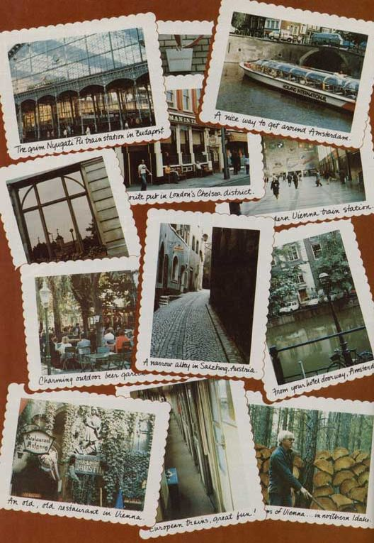

You say you want to go to Europe, but you don't have the money? Do what Stephen Allen of Bonners Ferry, Idaho did: Move back to the land, cut down on fossil fuel consumption... and "write your own ticket"!
Recently, while sitting at a charming wine garden in the Heuriger section of Vienna (where I'd just finished a delicious dinner of Parisier Schnitzel), I lifted my glass of German brandy and made the following toast: "To the Vienna woods ... and northern Idaho." Northern Idaho, you see, had made my trip to Vienna possible.
It's strange. Many people think that in order to live in the country, you have to be willing to do without a lot of things (as if deprivation and rural life somehow went together). This simply isn't true. On the contrary, a move to the country can enrich your life and give you things of real value ... such as Vienna, Paris, London, or Amsterdam. I know. I've been there.
Several years ago, I worked as a high-powered newspaper reporter in populous New Jersey. At the time, I pulled down $260 a week ... hardly what you'd call a regal wage, but not bad when you consider [1] the paper was non-union and [2] journalismespecially newspaper journalismhas never been known for its high salaries.
But the point is this: I desperately wanted to go to Europe ... and I couldn't afford to do so without borrowing money.
So I moved to the country. Now I'm working as a low-powered newspaperman in a small (population 2,500) town in northern Idaho ... and-although I make only $125 per three-and-a-half-day week (not counting the income from two additional part-time jobs) I'm happy to report that I've just returned from a three-week trip to London, Amsterdam, Vienna, Salzburg, Budapest, Transylvania, and Paris. And I didn't have to borrow a cent to finance my trek,
How did I do it? Simple: I started living within my means ... and pocketed the money I would otherwise have handed over to the Arabs, the giant oil companies, and the electric utilities.
Four years agowhile I was living in New JerseyI was paying out approximately $400 annually for fuel oil. (Today, it'd be much more than that.) I also spent about $300 a year on electricity. And I threw away close to $1,000 every 12 months for gasoline. (Needless to say, the cost of petrol has gone up some, too.) Add it all up, and you can see that I was shelling out no less than $1,700 (conservatively speaking) each year on energy when I lived in the Garden State.
Here in northern Idahoby contrastI lavish zero dollars per year on fuel oil ... zero dollars on electricity ... andbecause I bicycle to and from work when the weather is goodonly about $200 per year on gasoline. A grand total, in other words, of $200 annually in energy-related expenses. Which leaves me $1,500 a year of "found" money to spend on things such as tools, supplies, and trips to Europe!
The reason I'm able to cut my energy costs this way is thatfirst of allI use firewood (which I cut for free in a nearby national forest) for heat. (You can take home up to ten cords of firewood per year at no cost from most national forests. Ask your local Forest Ranger for a "Free Use" permit.) The folks up here have a saying that firewood warms you twice: Once when you cut it and once when you burn it. Personally, I enjoy the exercise.
Also, I'm about seven miles from the nearest town, and there just isn't much electricity where I live ... so I use kerosene (about $60 worth per year) for light rather than electric power.
"Well sure," you say, "kerosene may be a lot cheaper than electricity, but it doesn't give near as bright a light." You're right ... it doesn't. Romantic, eh?
"OK," some will argue. "But what about music and TV?" Well, have you ever heard Beethoven's Pastoral in the woods? A battery-operated cassette player does it, my friend. (I have about 500 tapes ranging from Sibelius to Smithas in Patti Smithto help while away the long winter nights.) And as for
TV: Not long ago, I finally broke down and bought a battery-operated television, which I use only on special occasions (as a TV ought to be used). It, too, does the job very nicely.
So. Even though I'm making less money now than I was several years ago when I lived in New Jersey, I am ableby living a slightly different lifestyleto save a considerable amount of money each year ... and I now use that money to finance my yearly forays to Europe. I see no reason why you shouldn't be able to do the same thing ... so long as you don't mind "giving up" the privilege of paying outrageous heating, lighting, and gasoline bills.
After extensive investigation, I found prior to my last trip abroad that the least expensive way to jet to Europe is to go on a charter flight. (Icelandic the "hippie airline" used to be the most economical way to go, but their prices can now be beat by the charter outfits.) On my last trek, I flew to London on Wardair (a well-known charter line) out of Calgary, Alberta, which is 350 miles north of where I live. The fare round trip, on a Boeing 747 was $379.
[EDITOR'S NOTE: Because fares are constantly undergoing revision, it's always best to do a little checking first before you commit yourself to any particular flight. According to a representative of one major international airline, it is now possible thanks in large part to Freddie Laker and the way he's set transatlantic airline fares on their ear to fly from New York to London round trip for $256 on a "space available" basis. What you do is [1] ask to buy a "Budget Fare" ticket, [2] tell the ticket agent what Sunday you'd like to begin your trip on, and [3] wait for the agent to confirm the availability of your seat on the appropriate flight. (The catch here is that you may not get to leave on the day you wanted. After you've been booked on a flight, however, your seat can't be taken away from you, and you can stay at your destination for as long as you like.) The point is: Shop around before you fly. You may turn up some unexpected bargains ... even with the scheduled air lines.]
If you decide to fly with a charter line (anyone can do it ... you don't have to belong to any kind of group, as long as you're willing to pay your fare at least 60 days in advance), my advice is to pick a carrier that you've heard of before. Wardair has been around awhile and can (in my experience) be trusted. Sun Toursa Canadian company that's underwritten by the Royal Bank of Canadahas been around awhile, too.
Charter prices seem to be a little less expensive across the Canadian border than in the U.S. (an advantage only if you happen to live near or above the border), but this may change soon. The important thing is to check the prices of as many charter companies as you can before you buy your tickets ... don't limit your search just to American firms.
Here are some tips on going to Vienna (or anywhere else in Europe) via "the woods", gleaned from my own experience in making six trips to the Continent over a twenty-year period (1956 to 1976):
[1] Never, never go by guided tour, even the first time. Sure, you'll make mistakes at first ... but that's what life is all about. I once boarded a train for Venice in Munich without realizing that you have to be on the right car as well as on the right train. (Some cars are disengaged en route and sent to other destinations ... and the final destination of mine was clearly marked on its side, had I bothered to look.) Consequently, I wound up in Merano, Italy (a place I'd never heard of) in the middle of the night ... and proceeded to have the time of my life. (I wouldn't trade that kind of "mistake" for anything!)
[2] If you can, learn a little of the language before you go ... but don't worry about it if you haven't. (You'll get by, believe me ... even the first time, even without a guide.) The thrill of a lifetime is going into the restaurant at the Gare I'Est train station in Paris ... ordering something with your high school or college French ... and finding that the waiter actually knows what you're talking about. ("He brought it! He brought it! ")
[3] Travel by train, second class. Western European trains are clean, punctual, and fast ... andunlike airplanesthey deposit you in the heart of your destination city. As long as you go via International Express, second class is plenty comfortable. In fact, if you travel during the off-season, you might have an entire compartment to yourself.
Eastern European trains are another story, unfortunately. They're punctual, but poorly maintained (in my experience). The word "clean" definitely doesn't apply. At this stage of eastern Europe's political development, you'll probably want to keep your travels behind the iron curtain to a one-time "quickie" stay, just to say you've been there. Personally, I didn't care for what I saw of the "satellite" countries. Accommodations were scarce, officials rude, and costs high. (Hungary has the highest suicide rate in the world. Go there and you'll find out why.)
About Eurailpass: I've never found it to be worth the money (although-conceivably-it could pay for itself if you intend to spend a lot of time on trains). I did quite a bit of moving around on my last trip through Europe and still foundwhen I tallied up my second class faresthat my expenses came to about two-thirds of what a Eurailpass would have cost for the same period of time. Of course, Eurailpass does put you in first class accommodations ... but unless you enjoy meeting retired Americans who demand to know why everybody can't speak English, second class (which is where all the really interesting retired Americans and other folks are) is more fun. Some people swear by Eurailpass. I don't.
Ever read Frommer's Europe on $10 a Day? Wonderful book. It contains lots of encouragement for the faint of heart. (I read Arthur Frommer's first book when he and I were PFC's stationed in Germany in 1956, and it encouraged me then,) You certainly couldn't go wrong buyingand taking alonga copy of this marvelous guide. Do remember this, though: Frommer's books have been translated into virtually every language except Urdu, and they're read by millions of people worldwide. Thus, when you're rushing to that little-known hotel on Belgravia Road near Victoria Station in London after getting off the Golden Arrow from Paris ... don't be surprised to find 50 Japanese touristsheavily burdened with cameras and Japanese-language Arthur Frommer booksrushing to the same hotel at the same time.
Americans, incidentally, are no longer the most prolific tourists in Europe. Every country (the Land of the Rising Sun in particular) is represented now. (Europeans feel that the Japanese are the only true Americans left in the world today.)
If you plan to go to Europe any time duringor even nearthe tourist season (June through October, roughly), be sure to arrange your schedule so that you can begin hunting for your hotel room in the morning. Otherwiseif you don't find a room by noonyou might as well forget about getting one in the major cities.
"Why not reserve rooms ahead of time?" you might ask. OK, go right ahead. Then, when your companionor perhaps even a strangersays (while sipping juice in a wine bar in Chelsea) "Hey, why don't we hop the Golden Arrow to Paris? It leaves in an hour, and if we get on it we could be in Paris by morning . . . " you can say, "Sorry, but I've already reserved a room in Blackpool". Or, if your companion had booked ahead, you'd have to leave her (or him) behind. I'll keep my itinerary open, thank you.
One last suggestion: If you have a lot of trouble getting a room and you don't mind sleeping on a trainand you could stand to save a little money by combining your sleeping time with your travel time-by all means consider sleeping as you go. Most International Expresses are night trains, and night trains are an experience all by themselves. (Tip: Take along a companion.)
Many people go to Europe in September (when plane fares are lower), thinking that because all the students and teachers are back in school Europe won't be crowded and prices everywhere will be more reasonable, Hah! Hah to that!
When I first went to Europe about twenty years ago, you could live, travel, and eat there for about a third of what it'd cost you to live, travel, and eat in the U.S. This is no longer true, however. European prices areon the wholenow comparable to (in some cases even higher than) prices here at home ... a direct result of the fact that the standard of living in most parts of Europe has gone up relative to the U.S. over the past twenty years.
"If Europe is no longer inexpensive," you might ask, "what's the point of traveling there?" My answer is this: Except for the initial expense involved in A bout as getting there, it'll cost you just A much to live, love, travel, and eat in Europe as it now costs you to live, eat, travel, and love in Atlantic City, New Jersey. I, for one, would rather do it all in Europe.
I'll be the first to admit that the whole idea of moving back to the land in order to save enough money to fly to Europe sounds pretty farfetched. To tell you the truth, on my last trip abroad I couldn't really believe I was pulling it off...even while I was enjoying a steak dinner (complete with wine) in the 747 high above Greenland.
The fact is, though, I did pull it off. And so can you. All you have to do is "give up" your dependence on fuel oil, electricity, and (to some extent) gasoline, and in a year's time (maybe not even that long) you, too, can treat your-, self to an expense-paid vacation in Europe.
Then again, if you'd rather stay where you are now ...
|
 |
|
|